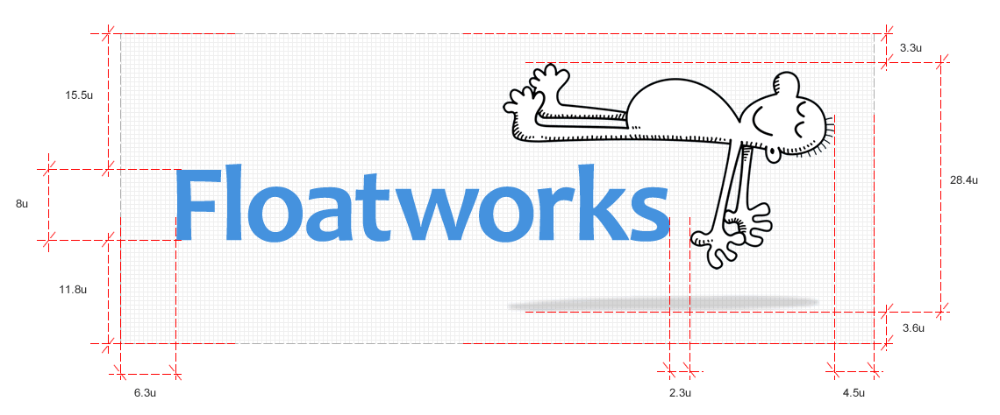
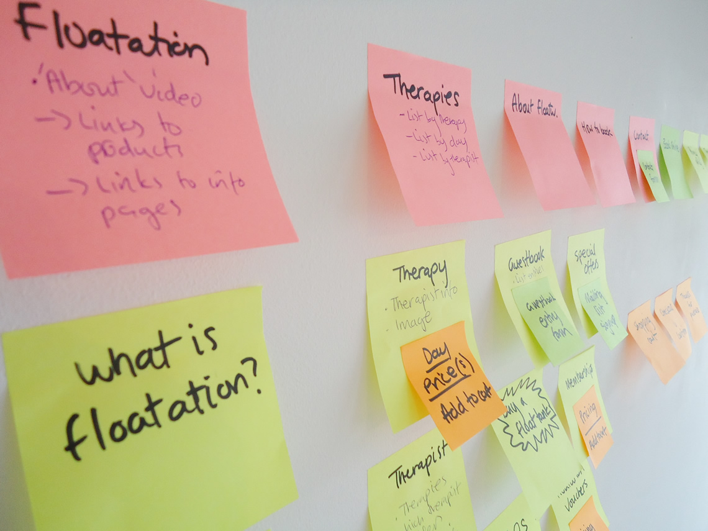

Floatworks is a retail service business in London. They opened their first shop in 1993 and now are the largest floatation centre in the world. They offer hour-long floatation sessions and many other complementary therapies to a diverse customer base.
The client's objectives were:
The roundel and glossy "web 2.0" style of the old logo was at odds with the personality of the brand. I chose to retain the iconic floating man character, but losing any frame-like surrounding elements, which is far more congruent with the idea of floatation as a liberating experience.
The logotype was revitalised with simple typography. The typeface (Candara) is unfussy and clear, yet also looks playful as there are no straight lines in the letterforms.
The content from the old site had to be audited to determine which areas were deficient. I then defined user-centered objectives for the new site and reorganised the content in a way that supported them.
These objectives were:
Testing the assumptions made in that first version of the architecture was critical, so I used my preferred rapid prototyping tool, Adobe Fireworks.
One aspect of the outgoing site that was lacking was the imagery - there were only a handful of images provided by manufacturers which sat uneasily with Floatworks' positioning. This was partly because the client had never in their 18 years of trading set up a floatation tank in a photo studio. (Not too suprising considering the star of the show has to be transported by truck and takes a full day to assemble.)
I organised the shoot, including:
I chose to shoot the subjects on a white infinity curve so I could quickly remove the background in post-production, and also colour it easily with lighting gels.
After the shoot I worked with the photographer and specialist retouchers to prepare the shots for website and print usage. I also worked with the videographer to edit our footage and compose a video. I helped the client write a script for narration and supervised the recording by a voiceover artist.
After switching over to the new design, I continued to monitor reports from the site analytics, form and ecommerce statistics, and user monitoring (through Clicktale).
Changes that I made soon after launch included: